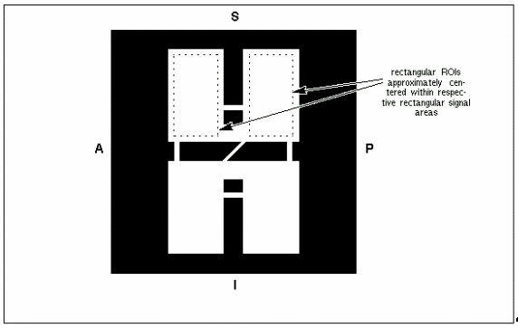

- 00000018WIA30208E20GYZ
- id_131066823.0
- Aug 29, 2019 1:37:33 AM
SPT Test Results Definition
Z-Isocenter Test
The Z-isocenter check is automated in SPT using SVAT. If you are running SPT (that is, only the InSite security key is present), Z-isocenter is measured and trended, but the config file is not updated. Trended means that test results are appended to trend logs.
If the service person authorized automatic config file updates when SPT was initiated, and Z-isocenter is out of specification by the update threshold limit or more, then the config file is automatically updated.
If the Z-isocenter error is greater than the limit for the highest change allowed, a hardware malfunction, not just calibration drift, has probably occurred and an automatic update will not be performed.
If a severe error is detected during the Z-isocenter Test, a message will appear telling the customer that GE advises against scanning any patients until the problem is corrected.
Gradient Calibration (Gradcal) Test
Analysis for the one-axis-at-a-time automatic gradcal is fully automated with SVAT for SPT.
If the customer is running SPT (that is, only the InSite security key is present), gradcal is measured and trended but the config file is not updated.
If the service person authorized automatic config file updates when SPT was initiated, and gradcal is out of specification by an amount that is equal to or greater than the update threshold, then the config file is automatically updated.
If the error for gradcal is greater than the limit for the highest change allowed, a hardware malfunction (not just a calibration drift) has probably occurred.
Center Frequency, SNR, and System Gain Tests
Test results are appended to trend logs.
x
Center Frequency
This is not really a test, but since the American College of Radiology requires trending of center frequency as part of daily quality checks on an MRI system, the center frequency determined by auto prescan for the sagittal scan of the Quick Check set is reported.
Signal-to-Noise Ration (SNR)
In the head coil, signal is measured in the sagittal scan of the Head Quick Check set. Signal is the mean value of all pixels within two rectangular regions of interest (ROIs) in the image, as shown in Figure 1. Noise is measured with a no-RF scan with 30% of full scale gradient applied to each axis during data collection. Body SNR and coil gain data are collected using the SPT body sphere in its short loader. Signal is measured as in body TLT SNR. Noise data are collected in the body coil and in the head coil. In both the head and body cases, signal and noise are normalized for coil gain—a significant change from the TLT SNR test.

Coil Gain
This test uses the un-normalized signal value measured during the SNR test(s) to compute coil gain for inclusion in the rational image scaling recon scale factor. If the customer is running SPT (that is, only the InSite security key is present), coil gain is measured and trended but the config file is not updated.
If the service person authorized automatic config file updates when SPT was initiated, and coil gain is out of specification by an amount that is equal to or greater than the update threshold, then the config file is automatically updated.
Stability Tests
Stability data for head and body coils is taken on each axis at seven slice locations centered about isocenter. In the body coil case, data from the center and outermost slices are processed. In the head coil case, only data from the outermost slices are processed since there is very little signal-producing material in the axial and coronal isocenter slices of the DQA phantom.
Gradient Recalled Echo
-
After auto prescan is completed, CVs are modified to kill the phase encoding gradient. Minimum slice thickness is used to stress the gradient subsystem.
-
Time domain echo shift deviation and constant phase deviation and magnitude deviation are plotted.
-
· A linear ramp is fitted to and then subtracted from the plot data for each parameter prior to computing peak-to-peak values. Peak-to-peak amplitude of each linear ramp is also reported. It is important to note that plots are shown with linear ramps included, not subtracted out.
Fast Spin Echo
-
Multi-slice stability tests using a fast spin echo clinical pulse sequence are employed by SPT. After auto prescan, CVs are modified to kill the phase-encoding gradient. Minimum slice thickness is used to stress the gradient subsystem.
-
Fast spin echo data are acquired with the CV raw data set to 1 to force raw data to be stored in time order with no preprocessing. Because raw data are not preprocessed, the error message “14 images did not successfully reconstruct from Exam E5XXXX, Series X” appears. This is normal and should be ignored.
-
Echo shift and constant phase deviation, and magnitude deviation are plotted with data arranged in order by echo (i.e., all echo 1 data, followed by echo 2 data, etc.).
Shim Test
SPT uses the same version of LVShim that is used to calibrate the magnet. LVShim analysis software command-line arguments permit SVAT to invoke LVShim in SPT mode, and to specify the diameter of the spherical analysis volume. SPT analyzes LVShim at 40 cm for a CRM and 45 cm for other body coils. When LVShim is running in SPT mode, it runs silently. (i.e., the normal LVShim user interface is disabled, and no output to the display is generated. SPT LVShim data are formatted as they are when LVShim is run in the test mode).
Eddy Currents Test
The TLT version of Grafimage is used to evaluate eddy current effects in the 2 msec to 100 msec range. It is important to note that linear short time constants are not measured with SPT.
Grafidy calibration can be in specification, but SPT may fail due to a problem in Grafimage ROI. Grafidy results have precedence over Grafimage results whenever a discrepancy is encountered. Use Grafidy to determine if the failure is real.
Systems with Release 8.2.5 or a later release: Short time constants are compensated for using default values that are in the default Grafidy calibration files (these systems no longer run short time constant compensation during Grafidy).
Coherent Noise Test
The coherent noise protocols are the same as those used for the Class A (non-proprietary) correlated noise test, except they are automated. Two changes have been made to the data collection:
-
The Head Coil is driven to near the end of travel outside the rear of the magnet. This permits listening for noise that may be present due to a breach in RF-shielded room integrity.
-
Gradwarp is turned off so that any zipper artifacts present in the images will be perfectly straight, improving sensitivity of the analysis. Data reported are the same as those recorded in the data sheets for the Class A Correlated Noise procedure.